Your factory makes the ammo. The turrets protect the factory.Die Fabrik baut die Munition. Die Türme schützen die Fabrik.
FICSIT Tower Defense turns Satisfactory into a factory-fed tower defense. A FICSIT Defense Core stands in your start biome, and waves of native fauna attack it from up to three fronts. Every turret fires real ammunition from your own production lines, delivered by conveyor belt or pipe. Fifty waves lead you from simple iron rebar to plasma flames.
FICSIT Tower Defense macht aus Satisfactory ein Tower Defense, das von deiner Fabrik lebt. Ein FICSIT-Abwehrkern steht in deinem Startbiom, und Wellen der heimischen Fauna greifen ihn aus bis zu drei Richtungen an. Jeder Turm verschießt echte Munition aus deinen eigenen Produktionsketten, per Förderband oder Rohr. Fünfzig Wellen führen vom einfachen Armierungsbolzen bis zur Plasmaflamme.
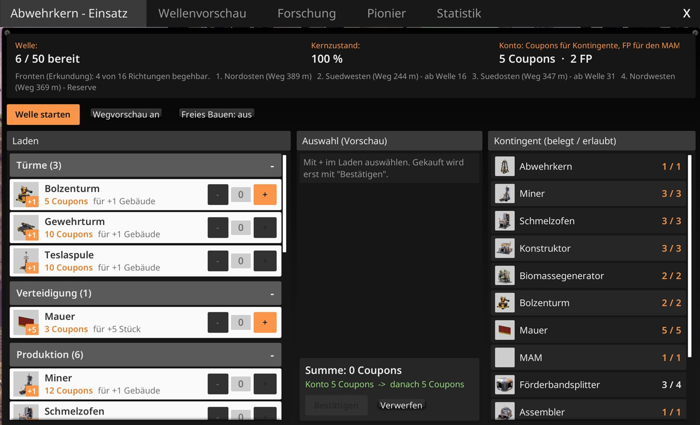
Quick startSchnellstart
How an operation worksSo läuft ein Einsatz
Build phaseAufbauphase
- No time pressure. You start the next wave yourself; the Core checks first that every turret has ammo and power.
- Quotas: production and defense buildings are limited per type. Logistics is free: belts, splitters, pipes, power lines, foundations.
- FICSIT Coupons from the Core buy more quota in the shop, plus gear and core repairs. Turret levels are bought in the turret window.
- New technology only comes from the MAM (research points from waves). HUB milestones and blueprints are locked during an operation (unless you switch on Free Build in the Core Menu, which lifts quotas and locks for testing).
- Ohne Zeitdruck. Die nächste Welle startest du selbst; vorher prüft der Kern, ob jeder Turm Munition und Strom hat.
- Kontingente: Produktions- und Verteidigungsgebäude sind je Typ begrenzt. Logistik ist frei: Bänder, Splitter, Rohre, Stromleitungen, Fundamente.
- FICSIT-Coupons vom Kern kaufen im Laden mehr Kontingent, Ausrüstung und Kernreparatur. Turmlevel kauft man im Turmfenster.
- Neue Technik gibt es nur im MAM (Forschungspunkte aus den Wellen). Meilensteine am HUB und Blaupausen sind im Einsatz gesperrt (außer mit Freies Bauen im Kern-Menü, das Kontingente und Sperren zum Ausprobieren aufhebt).
WaveWelle
- Enemies walk real paths from 1–3 fronts to the Core. All defenses heal to 100 % when a wave starts.
- Inside the defense zone you cannot place quota buildings while a wave runs. Logistics and power still work.
- You cannot save during a wave. The mod saves before and after every wave.
- After the wave: Coupons, research points, biomass and a small core repair. The report shows your best turrets and your own damage share.
- Gegner laufen echte Wege aus 1–3 Fronten zum Kern. Zu Beginn heilen alle Verteidigungsbauten auf 100 %.
- Im Verteidigungsfeld kannst du während der Welle keine Kontingent-Gebäude setzen. Logistik und Strom gehen weiter.
- In der Welle kann nicht gespeichert werden. Der Mod speichert vor und nach jeder Welle.
- Nach der Welle: Coupons, Forschungspunkte, Biomasse und eine kleine Kernreparatur. Der Bericht zeigt die besten Türme und deinen eigenen Schadensanteil.
Victory and defeatSieg und Niederlage
The difficulty depends on your start biome (Exploration, Normal, Hard, Nightmare): it sets Core health, when elites appear and when new fronts open. An operation has 50 waves in five phases, with a boss every tenth wave. Losing never deletes your factory. If the Core falls, the Core Menu offers Retry wave (loads the save from the start of that wave), Restart (wave 1 at the same site, factory stays) or End operation (no more quotas, the Core can be dismantled).
Die Schwierigkeit hängt an deinem Startbiom (Erkundung, Normal, Hart, Albtraum): Sie bestimmt Kern-LP, ab wann Eliten kommen und wann neue Fronten öffnen. Ein Einsatz hat 50 Wellen in fünf Phasen, jede zehnte Welle mit Boss. Eine Niederlage löscht nie deine Fabrik. Fällt der Kern, bietet das Kern-Menü Welle wiederholen (lädt den Stand vom Start dieser Welle), Neu starten (Welle 1 am selben Ort, die Fabrik bleibt) oder Einsatz beenden (keine Kontingente mehr, der Kern lässt sich abreißen).
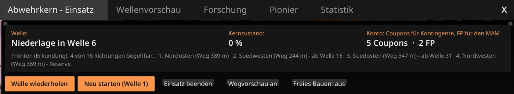
TurretsTürme
Turrets are machines: you pick the ammo recipe in the machine window, and each production cycle is one action (shot, magazine, discharge or one second of flame). Every line has an ammo ladder: each step needs one more ingredient and does more. Levels 1–5 are bought with Coupons in the turret window and are visible on the model; level 5 unlocks a master ability.
Türme sind Maschinen: Im Maschinenfenster wählst du das Munitionsrezept, und jeder Produktionszyklus ist eine Aktion (Schuss, Magazin, Entladung oder eine Sekunde Flamme). Jede Linie hat eine Munitionsleiter: Jede Stufe braucht eine Zutat mehr und kann mehr. Level 1–5 kaufst du mit Coupons im Turmfenster, sie sind am Modell zu sehen; Level 5 schaltet eine Meisterfähigkeit frei.
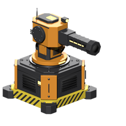
PiercingBolt TurretBolzenturm
- Rebar bolt (40) → piercing bolt (hits up to 2 more)
- Branch: shrapnel bolt (splits) or stun bolt (electric, 3 s stun)
- Late: explosive bolt
- Master: twin barrel
- Armierungsbolzen (40) → Durchschlagbolzen (trifft bis zu 2 weitere)
- Gabelung: Streubolzen (zerfällt) oder Schockbolzen (Strom, 3 s betäubt)
- Spät: Explosivbolzen
- Meister: Doppellauf
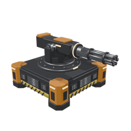
BulletRifle TurretGewehrturm
- Rifle ammo (12 per shot, continuous fire)
- Branch: homing or armor-piercing
- Incendiary ammo → turbo ammo (double fire rate)
- Master: belt drum, no reloading
- Gewehrmunition (12 je Schuss, Dauerfeuer)
- Gabelung: Zielsuch oder panzerbrechend
- Brandmunition → Turbomunition (doppelte Feuerrate)
- Meister: Gurttrommel, ohne Nachladen
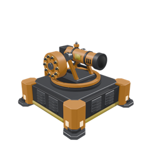
ExplosionNobelisk LauncherNobelisk-Werfer
- Nobelisk (150, area damage, lobbed)
- Branch: gas cloud (poison) or pulse (2 s stun)
- Late: cluster nobelisk
- Master: salvo of three
- Nobelisk (150, Flächenschaden, im Bogen)
- Gabelung: Gaswolke (Gift) oder Puls (2 s betäubt)
- Spät: Streu-Nobelisk
- Meister: Salve aus drei
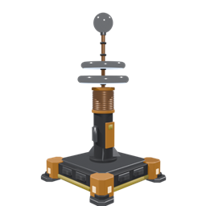
ElectricTesla CoilTeslaspule
- No ammo, needs power: 15 MW idle, 125 MW while charging
- Chain lightning to 3 more enemies
- Branch: bigger chain or overload (×2.5 on one target)
- Battery bank, high voltage; master: voltage field
- Keine Munition, braucht Strom: 15 MW Grundlast, 125 MW beim Aufladen
- Kettenblitz auf 3 weitere Gegner
- Gabelung: längere Kette oder Überlast (×2,5 auf ein Ziel)
- Akkubank, Hochspannung; Meister: Spannungsfeld
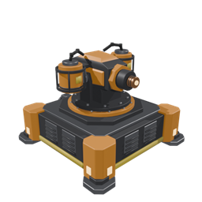
FireFlamethrowerFlammenwerfer
- Fuel by pipe: 80 damage/s in a cone, afterburn
- Turbofuel 120 → rocket fuel 140 → ionized fuel 160 (electric)
- Afterburn stacks while the flame stays on target
- Master: fire carpet
- Treibstoff per Rohr: 80 Schaden/s im Kegel, Nachbrennen
- Turbotreibstoff 120 → Raketentreibstoff 140 → ionisierter Treibstoff 160 (Strom)
- Nachbrennen stapelt, solange die Flamme auf dem Ziel bleibt
- Meister: Feuerteppich
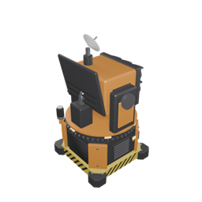
AirSky Tower and SingularityHimmelsturm und Singularität
Late turrets: the Sky Tower fires flak at flying enemies (flyers are still in development). The Singularity Launcher holds and crushes groups; it unlocks after wave 50, so only in Endless mode.
Späte Türme: Der Himmelsturm schießt Flak auf fliegende Gegner (die Flieger sind noch in Arbeit). Der Singularitätswerfer hält Gruppen fest und zerdrückt sie; er wird erst nach Welle 50 frei, also nur im Endlos-Modus.
CombosKombos
| ComboKombo | EffectWirkung |
|---|---|
| Lightning Rod | Tesla lightning prefers enemies with a stuck bolt and jumps once more at full strength. |
| Heat Crack | Burning enemies lose their armor against bullets and bolts. |
| Deflagration | A flame ignites the gas cloud of a gas nobelisk. |
| Oil Fire | Fire ignites a wet oil slick field: 5 s burning, walkers keep burning. |
| Chokepoint | Bolts pierce one extra enemy near a gate. |
| Rally Point | Enemies held by a lure fire take 25 % more explosion damage. |
| Conductor | An electric fence passes Tesla discharges to up to 3 enemies touching it. |
| Blitzableiter | Der Tesla-Blitz springt bevorzugt auf Gegner mit steckendem Bolzen und springt einmal mehr mit voller Kraft. |
| Hitzeriss | Brennende Gegner verlieren ihre Panzerung gegen Kugeln und Bolzen. |
| Verpuffung | Eine Flamme entzündet die Gaswolke eines Gas-Nobelisken. |
| Ölbrand | Feuer entzündet ein nasses Ölschlick-Feld: 5 s Brand, wer hindurchläuft, brennt weiter. |
| Engstelle | Am Tor durchschlagen Bolzen einen Gegner mehr. |
| Sammelpunkt | Vom Lockfeuer festgehaltene Gegner nehmen 25 % mehr Explosionsschaden. |
| Leiter | Ein Elektrozaun leitet Tesla-Entladungen an bis zu 3 Gegner, die ihn berühren. |
Defensive buildingsVerteidigungsbauten
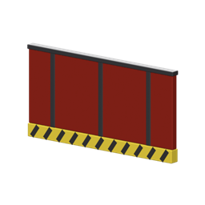
Walls and GateMauern und Tor
Enemies attack what blocks their path. The gate lets you and vehicles through; without power it stays open during a wave.
Gegner greifen an, was ihnen den Weg versperrt. Das Tor lässt dich und Fahrzeuge durch; ohne Strom bleibt es in der Welle offen.
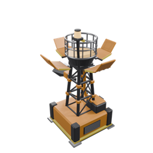
Lure FireLockfeuer
Burns coal and pulls all enemies within 40 m for 15 s, then rests 30 s. Steer waves onto your turret groups.
Verbrennt Kohle und zieht 15 s lang alle Gegner in 40 m an, dann 30 s Pause. Lenkt Wellen auf deine Turmgruppen.
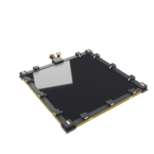
Oil Slick FieldÖlschlick-Feld
8 × 8 m plate fed with heavy oil residue: enemies on it walk 35 % slower. Fire turns it into a trap.
8 × 8 m Platte mit Schwerölrückstand: Gegner darauf laufen 35 % langsamer. Feuer macht daraus eine Falle.
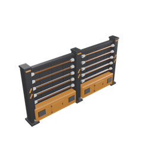
Electric FenceElektrozaun
Blocks like a wall; attackers get shocked and stunned. Works with the Tesla Coil.
Blockt wie eine Mauer; wer angreift, bekommt einen Schlag und ist betäubt. Arbeitet mit der Teslaspule.
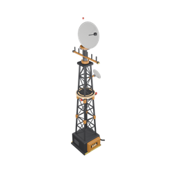
Radio MastFunkmast
+10 % range for turrets within 30 m, shows nearby resources and marks every front with enemy types 30 s before a wave.
+10 % Reichweite für Türme in 30 m, zeigt Rohstoffe in der Nähe und markiert 30 s vor der Welle jede Front mit den Gegnerarten.
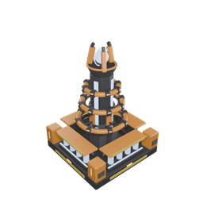
Shield GeneratorSchildgenerator
A 20 m dome absorbs damage on buildings (not the Core) and recharges.
Eine Kuppel mit 20 m schluckt Schaden an Bauten (nicht am Kern) und lädt sich wieder auf.
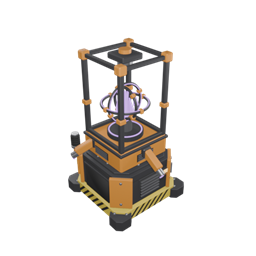
Jammer ProjectorStörfeld-Projektor
Slows all enemies within 15 m to 60 % speed. Late game, needs reanimated SAM.
Bremst alle Gegner in 15 m auf 60 % Tempo. Spätes Spiel, braucht reanimiertes SAM.
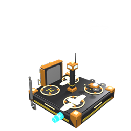
Drone PadDrohnenplatz
Repair drones or combat drones, 2–4 drones by level. They fly to damaged buildings or to enemies within 40 m.
Reparaturdrohnen oder Kampfdrohnen, 2–4 Drohnen je nach Level. Sie fliegen zu beschädigten Bauten oder zu Gegnern in 40 m.
Enemies and phasesGegner und Phasen
| PhasePhase | WavesWellen | New enemiesNeue Gegner |
|---|---|---|
| 1 Herd | 1–10 | Hog, Alpha Hog (5), Cliff Hog (7) |
| 2 Swarm | 11–20 | Small Stinger (13), Stinger (15) |
| 3 Forest | 21–30 | Spitter (21), Red Spitter (25), Alpha Spitter (28) |
| 4 Desert and Water | 31–40 | Desert and Water Spitters, Elite Stinger (38) |
| 5 Finale | 41–50 | Nuclear Hog (41), Johnny (46) |
| 1 Herde | 1–10 | Hog, Alpha-Hog (5), Klippen-Hog (7) |
| 2 Schwarm | 11–20 | Kleiner Stinger (13), Stinger (15) |
| 3 Wald | 21–30 | Spucker (21), Roter Spucker (25), Alpha-Spucker (28) |
| 4 Wüste und Wasser | 31–40 | Wüsten- und Wasserspucker, Elite-Stinger (38) |
| 5 Finale | 41–50 | Nuklear-Hog (41), Johnny (46) |
Every tenth wave is a boss fight. Elites have 2.5× health and are tinted. Wave enemies never attack the player, only your defenses and the Core.
Jede zehnte Welle ist ein Bosskampf. Eliten haben 2,5-fache Lebenspunkte und sind eingefärbt. Wellengegner greifen nie den Spieler an, nur deine Verteidigung und den Kern.
Resistances (damage factor)Resistenzen (Schadensfaktor)
| PiercingDurchschlag | BulletKugel | FireFeuer | ElectricStrom | Explosion | PoisonGift | |
|---|---|---|---|---|---|---|
| Hog | 1 | 0.75 | 1 | 1 | 1.25 | 1 |
| Stinger | 0.8 | 1.25 | 1.2 | 1.2 | 0.85 | 1 |
| SpitterSpucker | 1 | 1 | 1.3 | 0.85 | 1 | 1 |
| Desert SpitterWüstenspucker | 1 | 1.2 | 0.75 | 1 | 1 | 1 |
| Water SpitterWasserspucker | 1 | 1 | 0.8 | 1.3 | 1 | 1 |
Research, gear and the PioneerForschung, Ausrüstung und Pionier
MAM
- Four trees: Industry (machines, steel, oil, belts), Ballistics (bolt, rifle, nobelisk), Elemental (tesla, flame), Fortress (core, walls, doctrines, turret fabrication).
- Paid only with research points (FICSIT Combat Data) from waves. Nodes unlock from a certain wave.
- Branches: only one side per operation. A red X marks the side you can no longer research.
- Doctrine: pick one main turret line for more damage and cheaper levels.
- Vier Bäume: Industrie (Maschinen, Stahl, Öl, Bänder), Ballistik (Bolzen, Gewehr, Nobelisk), Elementar (Tesla, Flamme), Festung (Kern, Mauern, Doktrinen, Turmfertigung).
- Bezahlt nur mit Forschungspunkten (FICSIT-Kampfdaten) aus den Wellen. Knoten werden ab einer bestimmten Welle frei.
- Gabelungen: nur eine Seite je Einsatz. Ein rotes X markiert die Seite, die du nicht mehr erforschen kannst.
- Doktrin: eine Hauptlinie wählen, mehr Schaden und billigere Level.
Shop gear and the PioneerAusrüstung und Pionier
- The shop sells inventory slots, hand slots, Rebar Gun, Blade Runners, Rifle, Nobelisk Detonator and Core repairs.
- Your hand weapons use the same ammo values as the turrets and grow with the waves. Resistances apply.
- Ranks and talents: waves and your own performance (damage share, repairs, kills, assists) give XP. Every rank gives one talent point, up to 15 points per mission, and every third rank adds +10 HP and +3 % running speed.
- Four roles with five steps each, every step a new ability. Take two roles fully or three halfway: Marksman (headshots, fast reload, pierce, ammo saving, explosive rounds), Commander (target marking, +15 % turret damage on marked enemies, marking jumps on, rally order, overdrive for all turrets nearby), Engineer (field repair with Iron Plates, overdrive button in the turret window: 10 s +50 % clock, resupply ammo, bulwark), Hunter (×1.5 against elites and bosses, guaranteed loot, weak spot, resistances on the boss bar, execution).
- Target marking (Commander): every hit you land marks the enemy (blue light above it), and the targeting mode “Marked first” makes a turret go for it. A turret kill on a marked enemy counts as your assist.
- The wave report shows your damage and share: “You: 1,240 damage (11 %), 9 kills, 3 assists”.
- The Pioneer tab in the Core Menu shows rank, XP, the four roles and what each role did in the last wave.
- Der Laden verkauft Inventarplätze, Handplätze, Armierpistole, Klingenläufer, Gewehr, Nobelisken-Zünder und Kernreparatur.
- Deine Handwaffen nutzen dieselben Munitionswerte wie die Türme und wachsen mit den Wellen. Resistenzen gelten.
- Rang und Talente: Wellen und deine eigene Leistung (Anteil am Schaden, Reparaturen, Abschüsse, Assists) bringen XP. Jeder Rang bringt einen Talentpunkt, höchstens 15 je Einsatz, und jeder dritte Rang +10 LP und +3 % Lauftempo.
- Vier Rollen mit je fünf Stufen, jede Stufe eine neue Fähigkeit. Zwei Rollen ganz oder drei zur Hälfte: Schütze (Kopftreffer, Schnellladen, Durchschlag, Munition sparen, Sprengmantel), Kommandant (Zielmarkierung, +15 % Turmschaden an Markierten, Markierung springt weiter, Sammelbefehl, Übersteuern für alle Türme in der Nähe), Techniker (Feldreparatur mit Eisenplatten, Knopf Übersteuern im Turmfenster: 10 s +50 % Takt, Nachschub an Munition, Bollwerk), Jäger (×1,5 gegen Eliten und Bosse, sichere Beute, Schwachstelle, Resistenzen im Boss-Balken, Hinrichtung).
- Zielmarkierung (Kommandant): Jeder deiner Treffer markiert den Gegner (blaues Licht über ihm), und die Zielwahl „Markierte zuerst“ lässt einen Turm ihn bevorzugen. Erledigt ein Turm einen markierten Gegner, zählt das als dein Assist.
- Der Wellenbericht zeigt deinen Schaden und Anteil: „Du: 1240 Schaden (11 %), 9 Abschüsse, 3 Assists“.
- Der Reiter Pionier im Kern-Menü zeigt Rang, XP, die vier Rollen und was jede Rolle in der letzten Welle bewirkt hat.
Known issues (0.9.6)Bekannte Fehler (0.9.6)
- Stuck enemies: enemies can still get stuck on cliff pillars or terrain. The mod blocks that cliff for following enemies and relocates stuck ones after a while. Please report the spot with your log.
- Sky Tower: there are no flying enemies yet, so it never finds a target. Don't build it yet.
- Singularity Launcher: unlocks after wave 50, so only in Endless mode.
- Tesla Coils and power: each coil draws 125 MW while charging. Several coils can trip the fuse and silence every turret on that grid without a warning. Keep a power reserve or a separate grid.
- Multiplayer: not supported, and the mod does not warn when you host a session.
- Retry wave after a defeat is not yet tested in real play. If the wave-start save is missing, you get a message instead; use “Restart” or load
FicsitTD_Wxx_Startyourself. - Many saves: the mod saves before and after every wave and keeps them, up to 100 saves per operation. Delete old
FicsitTD_Wxx_*saves by hand. - MAM texts of Gate, Electric Fence and Radio Mast are outdated (power and radar details are missing). This guide is correct.
- Electric Fence may shock rarely, enemies tend to walk around a single fence. Connect it to walls or place it across the path.
- Some chat messages still mention the chat command
/td kern weiter; the Start wave button does the same. - With more than about 100 enemies the frame rate can drop.
- Balance is work in progress; the Core's remaining health varies a lot between runs.
- Hängende Gegner: Gegner können noch an Felspfeilern oder im Gelände hängen bleiben. Die Mod sperrt die Klippe für nachfolgende Gegner und versetzt hängende nach einer Weile. Bitte die Stelle mit Log melden.
- Himmelsturm: Es gibt noch keine fliegenden Gegner, er findet nie ein Ziel. Vorerst nicht bauen.
- Singularitätswerfer: wird erst nach Welle 50 frei, also nur im Endlos-Modus.
- Teslaspulen und Strom: Jede Spule zieht beim Laden 125 MW. Mehrere Spulen können die Sicherung auslösen und alle Türme im Netz ohne Warnung verstummen lassen. Stromreserve oder eigenes Netz einplanen.
- Mehrspieler: nicht unterstützt, die Mod warnt beim Hosten nicht.
- Welle wiederholen nach einer Niederlage ist im echten Spiel noch nicht getestet. Fehlt der Stand vom Wellenstart, kommt eine Meldung; dann „Neu starten“ oder
FicsitTD_Wxx_Startselbst laden. - Viele Spielstände: Die Mod speichert vor und nach jeder Welle und behält sie, bis zu 100 je Einsatz. Alte
FicsitTD_Wxx_*-Stände von Hand löschen. - MAM-Texte von Tor, Elektrozaun und Funkmast sind veraltet (Strom- und Radar-Angaben fehlen). Dieses Handbuch stimmt.
- Elektrozaun schlägt eventuell selten zu, Gegner laufen eher um einen einzelnen Zaun herum. Mit Mauern verbinden oder quer zum Weg stellen.
- Einige Chatmeldungen nennen noch den Chatbefehl
/td kern weiter; der Knopf Welle starten macht dasselbe. - Mit mehr als etwa 100 Gegnern kann die Bildrate einbrechen.
- Die Balance ist in Arbeit, die Kern-LP am Ende schwanken stark von Lauf zu Lauf.
FAQ
Does it work with my existing save?Geht es mit meinem bestehenden Spielstand?
The operation is meant for a new game with the session setting. Turrets and research also appear in existing worlds, but quotas and waves start only through the Core.
Der Einsatz ist für ein neues Spiel mit dem Sitzungsschalter gedacht. Türme und Forschung erscheinen auch in bestehenden Welten, Kontingente und Wellen starten aber nur über den Kern.
Multiplayer or dedicated server?Mehrspieler oder dedizierter Server?
Not supported yet. Single-player only.
Noch nicht unterstützt. Nur Einzelspieler.
Enemies get stuck on terrainGegner bleiben im Gelände hängen
The mod blocks the obstacle for the following enemies and moves stuck ones after a while. Please report the spot with your log file.
Der Mod sperrt das Hindernis für die folgenden Gegner und versetzt hängende nach einer Weile. Bitte melde die Stelle mit deiner Logdatei.
How do I report a bug or suggest an idea?Wie melde ich einen Fehler oder schlage etwas vor?
In the Core Menu, press Report bug / idea, choose bug or suggestion and describe it. The mod opens a prefilled GitHub issue in your browser (version, wave and language are added) and a folder with your log and a screenshot to drag into the issue. The mod itself sends nothing.
Im Kern-Menü auf Fehler melden / Idee drücken, Fehler oder Vorschlag wählen und beschreiben. Die Mod öffnet im Browser ein ausgefülltes GitHub-Issue (Version, Welle und Sprache stehen schon drin) und einen Ordner mit Log und Bildschirmfoto zum Hineinziehen. Die Mod selbst sendet nichts.
Where is the log?Wo liegt das Log?
%LOCALAPPDATA%\FactoryGame\Saved\Logs\FactoryGame.log
Which languages?Welche Sprachen?
English and German, following the game language.
Englisch und Deutsch, je nach Spielsprache.